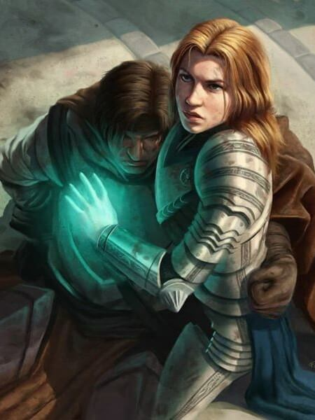
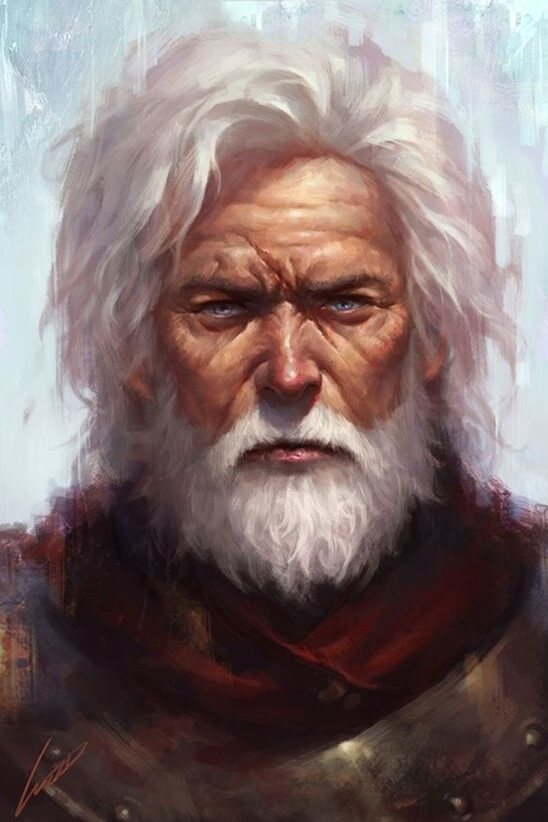
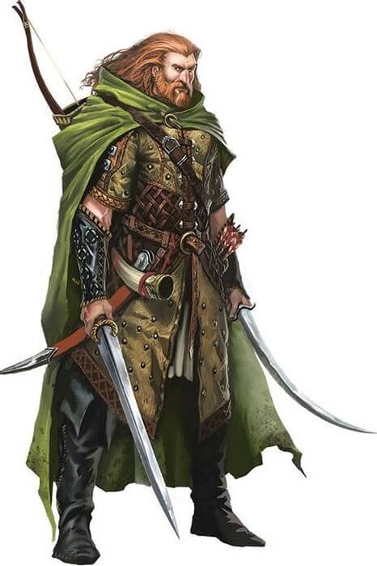
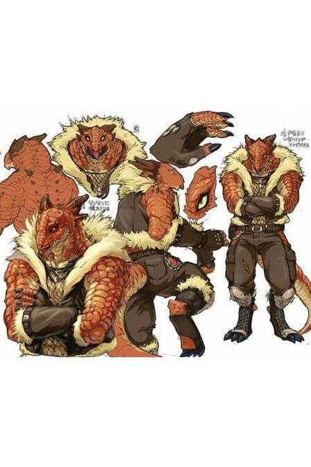
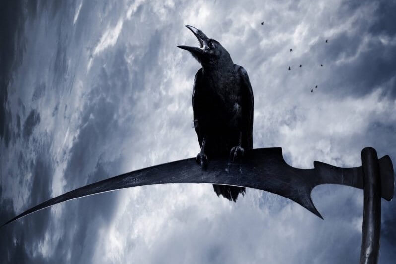
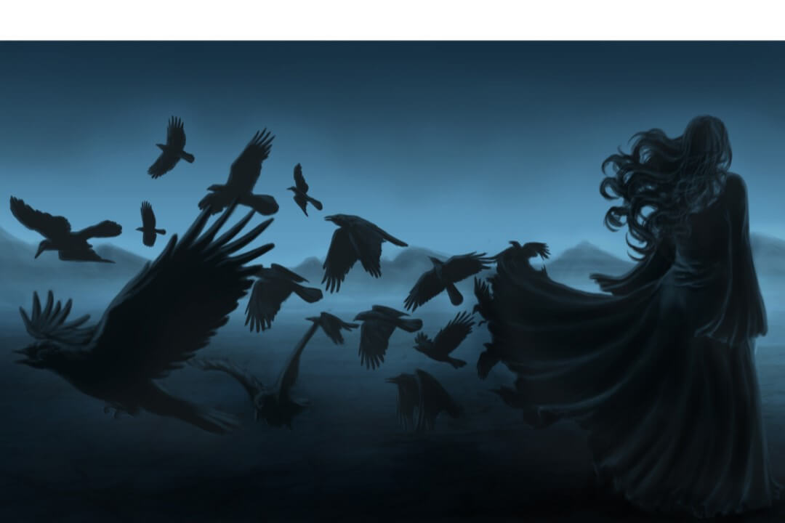
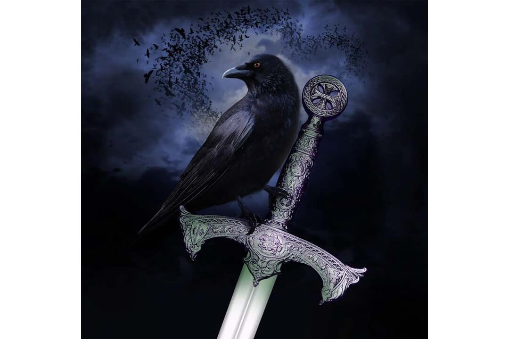
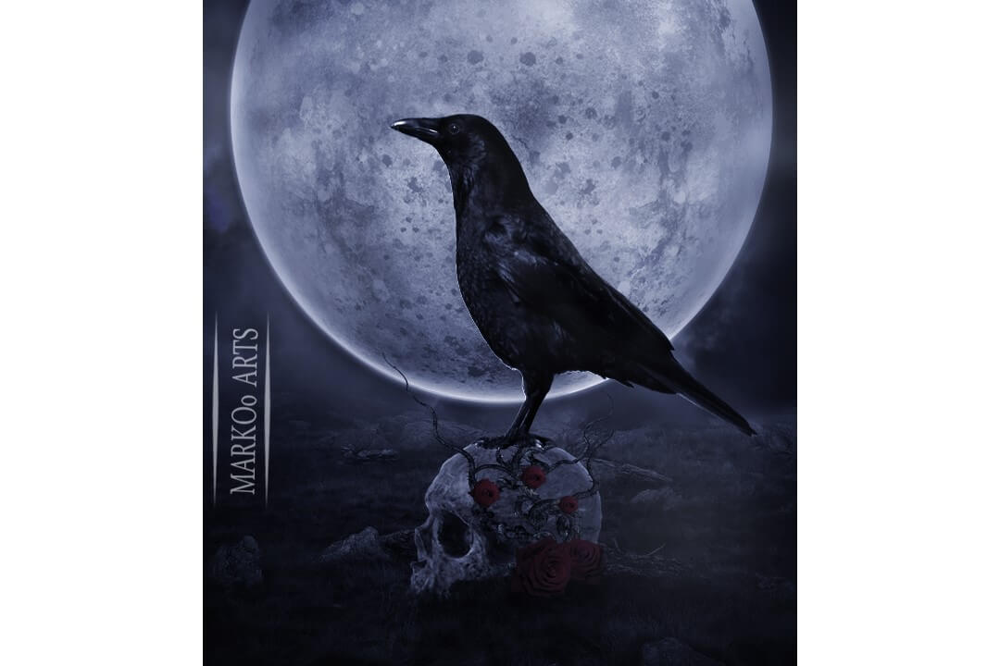
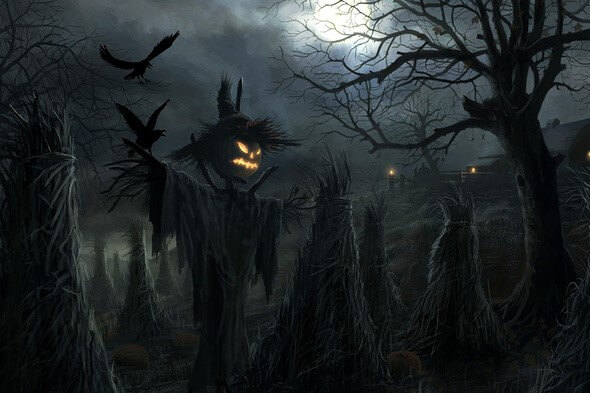

Chosen Heores
Reputation and Renown: Villagers from Rosler's Coffer
Leader Details: Mayor Grive

A practical and no-nonsense politician, Mayor Grive has helped Roslar's Coffer survive hardship and rebuild by recognizing when to take action and when she's in over her head and taking the sensible approach until the proper authorities arrive.
Action Plan: Follow the Dead Roads back to Rosler's Coffer
The last request of Mayor Grive: “I suppose, at least, there will still be someone on the other side who still remembers us. Just please, promise me that you’ll find out what happened to us when you get back, and that you’ll go to the capital and tell them what killed the people of Roslar’s Coffer.”
Hero Biographies
Drank
*** Warpriest of Iomedae 3

Appearance: ***
Background: ***
- Social Profile:
- Campaign Trait: The Word
- Family: ***
- Known Biases: ***
- Paralizing Phobias: ***
- Public Asperations: ***
- Religious Patrons: Iomedae, the Inheritor.
Esmerelda
*** Rogue 3
Appearance: ***
Background: ***
- Social Profile:
- Campaign Trait: The Artisan
- Family: ***
- Known Biases: ***
- Paralizing Phobias: ***
- Public Asperations: ***
- Religious Patrons: ***
Hazel Diggory
Middle-Aged Dwarven Stoic Caregiver Cleric of Torag 3
Appearance: While her brown hair and tan skin have lightened with age, she maintains a fiercely protective demeanor and is often seen walking about clad in heavy armor and wielding a large hammer. When she takes her helmet off, her stiking golden eyes and serious expressions often catch people by surprise.
Background: Following in the footsteps of her father, Hazel became a cleric of Torag, and has looked up to her older brother all her life. At 142 years old, she lost her husband already and has no children of her own, though she embraces the companions she's met, like Jerod Catarina, like brothers and sisters.
- Social Profile:
- Campaign Trait: The Lawbringer
- Family: Finn - Husband (deceased), Pluto - Father, Nico - Brother, Jerod Catarina - Best Friend (deceased), and Arion - Horse and Companion (deceased).
- Known Biases: She loves jewelery and gems, along with her horses like Arion and Hephestus. She has a hard time getting along with disrespectful folk, especially those who treat spending time in the water as "a fun hobby."
- Paralizing Phobias: Failing to save those she loves, traveling on or in deep water.
- Public Asperations: To become a great healer and protector.
- Religious Patrons: Torag, Father of Dwarvenkind.
Kel the Beggar
Middle-Aged Human Necromancer 3
Appearance: With white hair and a white beared, Kel stays clean enough to not smell and to make sure he can lock eyes with passer-by's. His face is weathered from exposure and his body is lean but strong for his age - strong enough to look like he could help with field work, though his smart mouth often makes people regret hiring him.
Background: A middle-aged and down-on-his-luck scholar, Kel has become bitter with the passage of time - and for good reason. He was happy a long time ago, or at least considerably less grumpy, back when he and his wife were raising their son together. Then, the Cult of the Whispering Way recruited and secretly trained his wife in the arts of necromancy. She, wanting their son to stay young forever and never grow old, killed their son and turned him into an Attic Whisperer, a childlike undead abomination. Once discovered, the son was destroyed so the soul could hopefully rest, while his wife was put to death, and Kel became alone in a world he didn't care for with the world feeling mostly the same way about him.
- Social Profile:
- Campaign Trait: The Pessimist
- Family: ***
- Known Biases: While he likes children, he hates worthless upstarts, which tends to be anyone over the age of fifteen. He also hates apathetic and fool hardy protectors and politicians, the Whispering Way, and his wife for siding with the cult.
- Paralizing Phobias: His son dissapearing, and catapillars.
- Public Asperations: He worries for his dead son and hopes to be worthy of seeing him again. In the meantime, he wants to blast the Whispering Way from Golarion, or at least find some food.
- Religious Patrons: Pharasma, Lady of Graves, and Iomedae, The Inheritor.
Kurt
Duskwalker Ranger 3
Appearance: ***
Background: ***
- Social Profile:
- Campaign Trait: The Reclaimer
- Family: ***
- Known Biases: ***
- Paralizing Phobias: ***
- Public Asperations: ***
- Religious Patrons: ***
Mordant "Drunken Dragon" Cailean
Lizardfolk Deliverer Slayer 3
Appearance: This red-scaled lizardfolk is more than an odity in Lastwall; he's the only one of his kind. With his horns, claws, and tough skin, its difficult to know which is more surprising: how mistrusting and closed off everyone is of him, or how trusting and open he is of everyone else.
Background: While he's not exactly been secretive, few bother to ask about the outsider in town. Still, most people know that he's an orphan, rescued at a young age by an Inquisitor and adoptive sister from the church of Cayden Cailean in Taldor. When he grew older, he left for adventure and to train, until - he claims - a vision led him to Lastwall and Rosler's Coffer, where he adopted a hound which he saw as his sign to stay.
- Social Profile:
- Campaign Trait: The Outsider
- Family: Fiona - Sister, and Tankard - Dog and Best Friend (deceased).
- Known Biases: He loves travelling, drinking, red meat, and experiencing new and exciting things, especially if its in the company of other merry people, though he hates juice, disruptively sad or angry people, bondage of anykind, and especially being bored. He hates slavers and the cowards that allow such things as well as those who lose control of their anger, their blade, or their drink.
- Paralizing Phobias: Enslavement and bondage or helplessness.
- Public Asperations: To become a capable adventurer.
- Religious Patrons: Cayden Cailean, the Lucky Drunk.
Phlare Flameblood
Ash-Changeling Pheonix-Blooded Sorcerer 3

Appearance: The Flameblood family are known for their stunning blue eyes and their strong penchant for fire magic. Though the siblings all clearly have different mothers, they have their father’s eyes, wavy hair, and general facial shape. The middle child of the family, Phlare has exceptionally dark, pencil sketch hair and pale skin, a trademark given by her mother.
Background: According to rummor spread since their recent wealth, the ancestor of the Flameblood line, Shango, witnessed the rebrith of a Pheonix, which bonded with him, and he changed his surname to Flameblood in honor of the miracle witnessed and the resulting powers of their bond. Phlare's father traveled on a pilgrimige to sacred sites belonging to Sarenrae after the death of his first wife, where he met Phlare's mother, who became pregnant during the trip home.
- Social Profile:
- Campaign Trait: The Optimist
- Family: Blaze - Father (deceased), Hestia - Step-Mother (deceased), Pyre - Older Brother, Phlogiston - Younger Brother, Freya - Sister-in-Law, Agni - Niece, and Azar - Nephew
- Known Biases: ***
- Paralizing Phobias: Harm befalling her family.
- Public Asperations: ***
- Religious Patrons: Sarenrae, the Healing Flame.
Skchar Whylie
Skinwalker-Human Slayer 3

Appearance: Cursed with the appearance of a beastly man, this skinwalker appears mostly human save for his exceptionally hairy skin, thick muscles, and piercing eyes.
Background: A bit of an odd case, Skchar Whylie comes from a broken home in a town where everyone knows everything about each other. He thinks of his talents as a curse and spends his time trying to know the private details of everyone else in town, perhaps in an effort to keep them from getting too close to his family's secrets.
- Social Profile:
- Campaign Trait: The Snoop
- Family: ***
- Known Biases: He has a complicated relationship with the Gods, and he despises non-spiritual magic users.
- Paralizing Phobias: Being cast out, snakes.
- Public Asperations: To escape Rosler's Coffer and become something... more.
- Religious Patrons: Gorum, Lord in Iron.
Strangeness Since the Midsummer Pageant: These are things the PC's have discovered about themselves since they awoke after the Midsummer Pageant
Drawback Trait: Hard to Stabilize
Death seems to be waiting for you, ready to take you at a moment's notice. It is impossible to stabilize when dying or disabled; When you begin a turn with 0hp or less, you immediately take 1 point of damage and lose the benefits of Fast Healing and Regeneration until you are slain or you recover. This replaces the need to make stabilization checks.
Trait: Overhealing

Your body is able to contain more life than seems possible. When you gain hp, either through a spell or ability like cure light wounds or through any other form of magical or supernatural healing (but not extraordinary healing), if the spell or effect would raise your hp above its maximum, you gain a number of temporary hp equal to the surplus. These temporary hp decay at a rate of one per round.
If you ever have temporary hit point equal to or greater than your current hp, your body begins to tear at its seems. This causes two points of constitution drain each round until your temporary hp no longer exceeds your current hp. This constitution drain reduces your current hp, not your current temporary hp.
If your temporary hp ever exceeds double your current hp, your body explodes with positive energy, slaying you and destroying your body completely. All creatures within thirty feet are healed or harmed by 1d4 points of positive energy for every ten points of temporary hp you possessed when you exploded as channel energy, with a Will save DC of 10 + your HD for half. All objects on your person take an equal amount of damage, though intelligent objects may attempt a Will save.
Strange Whispers and Dreams
Over time, strange whispers beign to slowly overwhelm your senses. Every hour, the whispers get louder and louder in your characters ears, applying a cumulative -1 penalty to perception, sense motive, and survival, with a max of -10.
The only way to be rid of this penalty is to close your eyes and either sleep, meditate, or otherwise collect yourself, which causes you to experience strange dreams. This takes five minutes plus one minute per penalty applied by the whispers, which can be interupted.
After collecting yourself, you heal one point per penalty applied by the whispers, and can level if you have the experience to do so. When leveling, you increase your maximum hp as usual, but your current hp does not increase except through healing.
Obol Resonant Power - Positive Polarity
You are resistant to the negative power and magical undeath of the Nothing and find yourself uniquely suited for surviving it's assualts and overcoming the defenses and resistances of its anti-life creations
The Obol is harmlessly absorbing a portion of negative energy effects you are exposed to. A number of points of negative energy equal to twice your hit dice is absorbed from every attack or source (or round for enviornmental effects) before (and stacking with) any of your other resistances are applied.
The Obol whatever it is that's absorbing the negative energy is also protecting you (possibly against your will) from the magical powers of necromancy. This imparts spell resistance equal to 11 + your hit dice against all necromancy spells. This spell resistance cannot be voluntarily lowered and also applies against any spells you cast, if the spell has a chance of affecting you. You cannot be corrupted by unlife and made into a creature of the undead type or subtype.
Finally, the Obol is also helping to bypass the protections of undead. This causes all of your natural and mele weapon attacks to be treated as magic, cold iron, and silver for the purposes of overcoming the damage reduction of undead targets. This has no effect on ranged attacks, including attacks with thrown weapons.
Special Quality: Pinned Soul
Your soul has been pinned to your permanently to your body. Spells and effects that restore souls to their bodies, such as raise dead, reincarnate, and ressurection have no effect on you. Different magical effects, such as limited wish, wish, miracle, and true ressurection continue to work normally. Spells that trap souls, such as magic jar also have no effect, though your body can still be controlled or possessed.
Your body is partly strengthened by your souls strengthened presence. You do not need to eat or sleep, though you may do so if you wish or are otherwise forced to eat or sleep. You still need to breathe. Abilities that require rest, such as the restoration of spell slots, still require you to either sleep or otherwise relax for the same amount of time.
This does come with a price. Your soul appears to be deteriorating and taking your body with it. Every 24 hours, you age 1 year. If your new age would raise your age category, you take all the penalties, but none of the bonuses.
Special Quality: Banished from Death
Your soul and body are bound together, and so long as your soul is not destroyed, your body will continue to reform. Death, however, does not come without a price.
If you are slain, you return to your body and to life after one hour at 1hp. If you return to your body and die within 1 minute, your body is destroyed, as desintegrate. If your body is mangled, destroyed, or in other ways is not able to be restored, your body disintegrates after one hour and reforms later, taking one hour per HD to reform. This reconstruction occurs at the last stable and unocupied surface you were standing on.
Every time you die, your soul uses its own energy and the quintessence of surrounding objects to restore itself. 1 minute after your death, all equipment you are wearing or carrying, except for those outlined below, is destroyed. Every time you return to life, you age 1d10+10 years. If you're playing a race that lives 200 or more years, multiply this result by two, or multiply by 3 if playing an Elf or Drow. If the aging raises your age category, you take the penalties, but not the bonuses.
When you regain life or otherwise reform, you retain a few items on your person. You may keep one piece of worn items per ability modifier in charisma, one consumable magic item or 10 pieces of ammunition per ability modifier in wisdom, and one of anything else per ability modifier in intelligence. You cannot save objects in an extradimensional space by choosing its container - while seemingly identicle, the item is different and does not contain the same contents. You do, howver, always retain all items stored in an extradimensional space related to a spell or ability. The items chosen must have been on your person when the items on your body and the items carried were destroyed. Any item taken by another player after you die before the items are destroyed are saved.
Campaign Traits and Powers
The Artisan
Description: Precision is important in getting exactly what you want, and you give careful consideration in building everything from homes and vases to roads and empires. Your own attention to detail has proven vital in rebuilding Roslar’s Coffer from the orc occupation a decade ago, whether you are an accountant, architect, engineer, or herbalist.
Bonus: Your attention to detail provides you a +1 trait bonus on Appraise and Heal checks, and one of these skills becomes a class skill for you. Once per day, you can spend a full round casting a spell you can cast that has a normal casting time of 1 standard action to increase your effective caster level for that spell by 1. This ability has no affect on spells with a casting time other than 1 standard action.
Occupation: Construction Detail - Whether you're an accountant, architect, engineer, herbalist, or have a different profession, you have been very helpful in the reconstrcution efforts of Roslar's Coffer. Due to your skill and attention, you now find yourself helping with the design and implementation of current expansions while most of the other workers have either returned to the fields or else sought employment in Vigil. You gain 50gp in spending money at the start of the game.
Family: The stability and prosperity of your job has afforded you a small house and the time to settle down with a family. Whether you have been married for a long time or are currently engaged, you have a significant other with whom you are in love. You may or may not have children already, but either your significant other is with child or the two of you have recently adopted a baby.
Strange Dreams: - Since the explosion, whenever you close your eyes and try to calmly concentrate, you see a vast library of books, all plain and without any cover. Wandering the library with you are people shelving books, some of whom you recognize as your ancestors. You gain 3hp.
The Lawbringer
Description: The frontier is a land of risk and disorder, and while people are welcome to brave those elements themselves, they all too often bring pain down upon folk who never wanted such a risk. You might serve on the town guard or as part of a detachment of soldiers supported by Vigil, or you could be simply a concerned farmer who endures when others cannot, but your purpose is to stand as a bulwark against the cruel whims of fate for anyone who needs it.
Bonus: You gain a +2 trait bonus on saving throws against fear effects. If you have the aura of courage class feature, the bonus provided by your aura increases by 1. Your courage is inspiring; the first time each day you are knocked unconscious or killed, all allies within 30 feet of you immediately gain a number of temporary hp equal to your level plus your Charisma modifier, as they rally to your defense. These temporary hp last for 1 minute.
Occupation: Militia - Whether you were a farmer, a town guard, or a soldier from Vigil, your base pay now stems from your work in Roslar's Militia and your defense of Roslar's Coffer. You gain 10gp in spending money at the start of the game as well as a masterwork light shield as part of your uniform.
Family: Whether you grew up here or not, your closest family are the brothers and sisters in arms you serve with. You have a best friend, a human named Jerod Catarina, that has been serving here as long as you. You and he may be in a budding relationship, but things haven't gotten serious yet, or you else your relationship may be completely platonic but no less deep. The two of you have been saving for months to get a small flat together and move out of the barracks.
Strange Dreams: - You have always fallen back on your training in times of crisis, but didn't expect to see the training before you when you close your eyes. You see formations of hundreds of soldier's, brothers in arms, across centuries of armor and formation styles, all drilling and training together with impossibly perfect precision and cohesion. You gain 5hp.
The Optimist
Description People don’t need to take your word that things are getting better; they only need to look around and see the proof before their eyes. The town’s recovery from the orc occupation more than a decade ago is all but complete, and the monster in the Sarenite temple outside of town has finally been bested. Your irrepressible sense of optimism seems to fly in the face of the hard life that most residents of Roslar’s Coffer face, but you’re convinced that your positive attitude lifts up your community.
Bonus: You gain a +1 trait bonus on saving throws against mind-affecting effects. Further, your optimism can be infectious. As a swift action a number of times per day equal to your Charisma modifier (minimum 1), you can grant this bonus to an ally within 10 feet. This bonus lasts for 1 minute.
Occupation: Hobbyist - You have pursued both work and hobbies in equal measure since you found a burried cache of treasure while clearing away some rubble during the reconstruction a few years ago. You gain 1,000gp and five sets of fine clothing worth 50gp each at the start of the game.
Family: own a small manor house where you live with your family. Your living parents reside in the attached guest house, and you share your home with your spouse or significant other and two children. Alternatively, you could live here with your brother and his family.
Strange Dreams: - Your good luck and attitude have served you well so far, and they continue when you close your eyes. You see a thriving city, filled with happy people and music, when you close your eyes, each person trying to tell you a different story, though you can't seem to understand them. You gain 4hp.
The Outsider
Description: You don’t have a place, but the frontier seems comfortable enough for now. Maybe you’re too informal for city life, too selfish for Lastwall’s general culture of camaraderie, or too scarred by things you’ve seen to entirely trust another person.
Bonus: You are accustomed to moving without drawing much attention to yourself, gaining a +1 trait bonus on Stealth and Survival checks, and one of these skills is always a class skill for you. Accustomed to working alone, you gain only half the benefit (+1) from aid another actions, but you’re accustomed to doing the job right the first time and so increase the bonus you provide by 1 when aiding another character.
Occupation: Migrant Worker - You don't have any formal or regular employment, preffering the transient lifestyle, even though its landed you here for a while. When you need money, you do odd jobs, and you've been able to get by just fine so far without commiting too much to anything. You gain 15gp and a pet worth 50gp or less at the start of the game.
Family: Regardless of your relationship with the rest of your family, they are far away right now. You may have had lovers or companions, but no one permanent. Your only real family is your pet, who has been with you since shortly after you left home. The two of you are staying at the Inn, Rosler's Room's and Recs, for the time being.
Strange Dreams: - You used to dream of fantastic places to visit and adventures to be had, but since the explosion, the landscapes have become far more detailed and vivid. You can see, smell, hear, strange places youve never been and see other travelers on the road journeying with you. You gain 4hp.
The Pessimist
Description: You expect the worst and have rarely been disappointed. Your dour outlook may hail from the original destruction of Roslar’s Coffer at the hands of the Twisted Nail tribe, the exile of the faithful from the nearby Sarenite temple, or some more personal misfortune, but it has set you apart among the largely forward-thinking population of Lastwall.
Bonus: Your faith that the worst possible outcome will occur grants you a +1 trait bonus on Will saving throws. Your frustrating pessimism can spur friends to succeed just to spite you; once per day as a free action, you can force an ally within 30 feet to reroll a saving throw she just failed, using the better of the two results.
Occupation: Beggar - You haven't been able to hold down a job longer than a few weeks for the past few years, giving you a terrible streak of poverty and bad employment history. You've now worked for nearly everyone in Rosler's Coffer, and none care for your attitude enough to put up with your talents. You gain 5gp at the start of the game in copper and silver from begging today.
Family: Your spouse betrayed you in the wrost way, they killed your son (either biological or adopted) and raised them as an Attic Whisperer out of some perveted view of life and death after becoming a follower of the whispering way. You testified against them and had them executed, but the event still haunts you, leaving you with a melancholy outlook towards both friends and lovers generally.
Strange Dreams: - Your bad luck and attitude have kept you alive, but they haunt your waking dreams. You see the dead, including loved ones and former friends, when you close your eyes. Some yell at you, some plead with you, and others try to speak with you, but you can't hear what they're saying even when you try to listen. You gain 4hp.
The Reclaimer
Description: You lost something precious in the destruction of Roslar’s Coffer 12 years ago—a home, a legacy, perhaps even family—but returned because a soul shouldn’t run from pain, but heal from it. Rebuilding your life and preventing that same hurt from dragging down others drives you to serve and protect, perhaps as a politician, charity worker, healer, or soldier, but that same loss fills you with an uncharitable anger that is often difficult to reconcile.
Bonus: Your wary eyes grant you a +1 trait bonus on Perception checks. You gain a +1 trait bonus on attack and damage rolls against any opponent that dealt hit point damage to one of your allies in the previous round.
Occupation: Public Servant - Whether you've chosen to be a politician, charity worker, healer, or soldier, you work for Rosler's Coffer and have your living subsidized by a combination of taxes and donations. You gain a Medallion of Service worth 20gp at the start of the game and can eat and drink for free anywhere in Rosler's Coffer.
Family: Most of your family past away 12 years ago, whether the included siblings, parents, children, or a spouse, but that hasn't dampened your spirits. You have a blossoming love with someone in town, and are either courting, engaged, or newlyweds. They help bring you joy and ease the rages that sometimes rule you. You have no children, but may be planning on having some soon, and may have a pet cat, dog, or bird.
Strange Dreams: - You used to dream of your mistakes, reliving them over and over again in your own private hell. The content of your dreams is unchanged, though the format is new - you can move around, do things differently, change things. Mistakes are a wonderful teacher, every wrong leading you to the right descision until you feel... healed. You gain 5hp.
The Snoop
Description: You know a little bit about most everything and everyone in Roslar’s Coffer. It may be your profession, as you could be an archivist, crier, or librarian—or you simply make a hobby of gossip.
Bonus: Either way, you have a gift for recall and reading others. You gain a +1 trait bonus on Knowledge (history) and Knowledge (local) checks, and these both become class skills for you. Once each day you can reroll a single Bluff or Sense Motive check against a creature you have known for at least 24 hours, using the better result.
Occupation: Gossip - Or at least, that's what it would be if people paid you enough just for that. Whether your an archivist, crier, librarian, or simply a hobbyist, you've made it your real profession learning the lives of anyone and everyone. You gain 15gp and a gold ring worth 30gp that you got off someone in exchange for your discression at the start of the game.
Family: You may have a spouse, or you may not, but you try your best to keep your families indescressions and foillies out of the limelight. This has led many to feel that your parents, spouse, sibblings, or children are more akin to shut-ins that real people. Whatever family you live with, one of them is a violent schizophrenic and the rest are extreem introverts, causing you to seek social interaction outside.
Strange Dreams: - Parties were a place to aspire to reach, to be invited to, to not just see but be seen! Somehow, you've found yourself at the center of a large party when you dream, a party where you are the Honored Guest and everyone is clammoring for your attention. They whisper to you things, secret things, things you know you need to remeber when you wake. You gain 4hp.
The Word
Description: In a nation overcrowded with faith, you often worry that your message is drowned out, but nonetheless important. The souls in Roslar’s Coffer needed comfort and charity once upon a time, but have bounced back so fully—in part thanks to your hard work—that you worry you’ve made yourself unnecessary.
Bonus: You are accustomed to long hours, granting you a +1 trait bonus on Fortitude saving throws. Your faith is invigorating, and once per day you can lay on hands as a paladin of half your character level (minimum 1). If you gain the lay on hands ability from a class, you instead gain one additional use of lay on hands each day.
Occupation: Priest - Regardless of your faith, you are a part of its paid ministry, and are integral to the community. You gain 15gp and a silver holy symbol of your choice at the beggining of the game.
Family: You live in a house owned by the church, possibly attached to a temple, have no serious relationships, and have largely considered yourself devoted to your diety. You may have a crush on someone in town, but they have not noticed you yet, though you are sure to soon try and grab their attentions.
Strange Dreams: - You have studied and daydreamed about the Great Beyond for much of your life, and find yourself dreaming of it each time your eyes close. Except the place is real - the walls, the floor, the open sky, the petitioners and the chosen - you are... home at last. The outsiders gather in a huddle, murmering to themselves quietly, before one is inevitably sent your way to grasp you by the hand and look deep into your eyes. You gain 4hp.